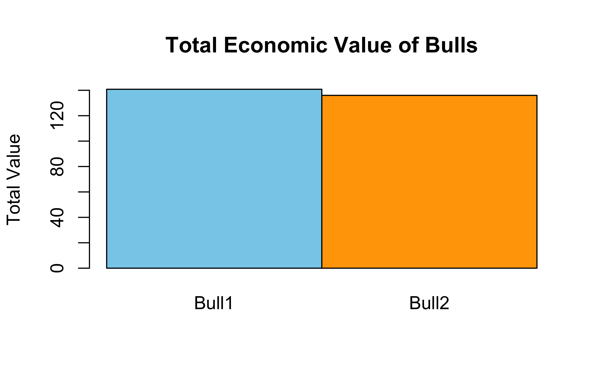
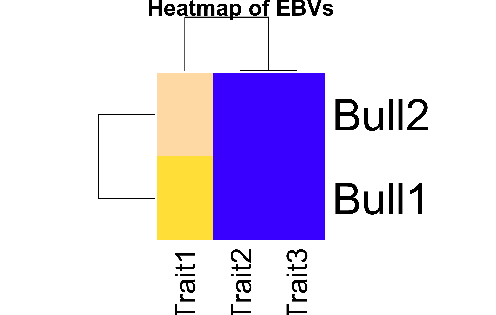
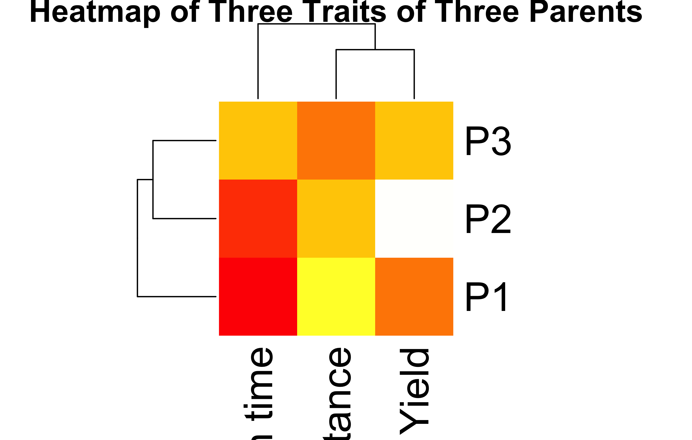
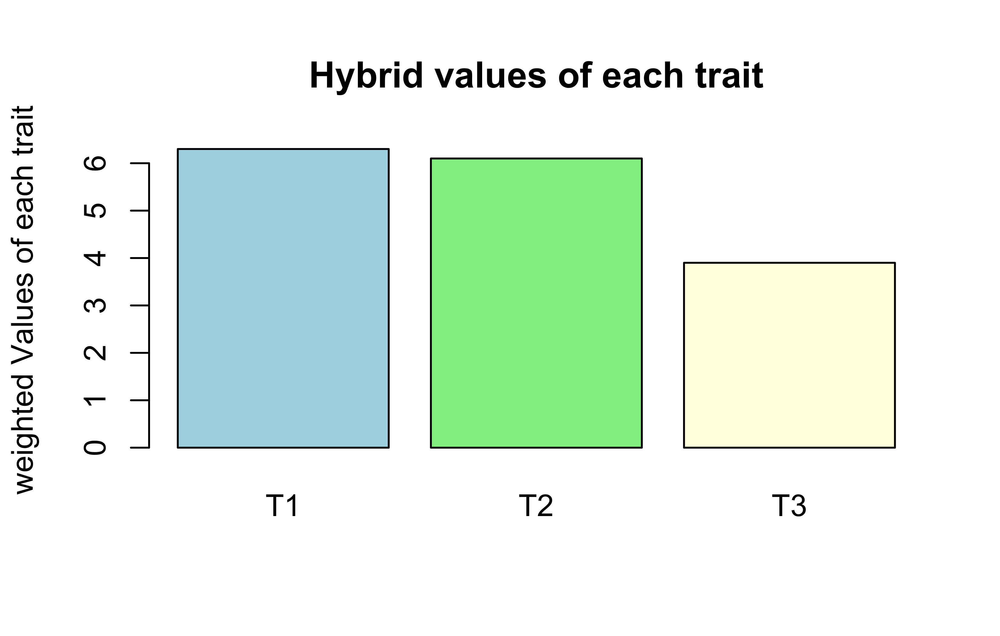

Multiplying the protein levels by the weight vector shows how much each protein contributes in a sample. The result shows total protein concentration per sample.
The result shows that sample S2 has the highest protein burden.
The identity matrix represents no protein interactions or measurement biases. It is a simple matrix calculation.
New calculation:
# changing the weight of ProteinZ to 3.0newweightvector=matrix(c(0.5, 1.0, 3.0), nrow=3, byrow =TRUE)rownames(WeightVector)=c("ProteinX", "ProteinY", "ProteinZ")colnames(WeightVector)=c("Weight")newTotalconc=ProteinMatrix%*%newweightvectorcolnames(newTotalconc)<-"Total_Protein_Conc"newTotalconc
Total_Protein_Conc
Sample1 11.5
Sample2 21.5
Still, S2 has more protein burden.
Bonus:
Heatmap reveals PX is most abundant across all samples.
print("1. Matrix multiplication allows each gene in both samples to be multiplied to their respective translation efficiency. So, the product shows how successfully each gene is translated")
[1] "1. Matrix multiplication allows each gene in both samples to be multiplied to their respective translation efficiency. So, the product shows how successfully each gene is translated"
print("2. The diagonal TranslationMatrix make sense biologically because they show translation efficiency of each gene and there is no other interaction between them. Although there could be interaction in real-world scenarios.")
[1] "2. The diagonal TranslationMatrix make sense biologically because they show translation efficiency of each gene and there is no other interaction between them. Although there could be interaction in real-world scenarios."
print("3. If Sample2 has higher protein levels even with similar gene expression, it means that more mRNAs are translated to proteins compared to Sample1")
[1] "3. If Sample2 has higher protein levels even with similar gene expression, it means that more mRNAs are translated to proteins compared to Sample1"
print("4. The upward trend in MARplot may indicate an increase in translation efficacy and downward trend may indicate a decline in translation efficacy")
[1] "4. The upward trend in MARplot may indicate an increase in translation efficacy and downward trend may indicate a decline in translation efficacy"
print("5. Clustering in the heatmap may suggest which samples are most similar to each other based on their prot")
[1] "5. Clustering in the heatmap may suggest which samples are most similar to each other based on their prot"
Task 3: Animal Breeding – Bull Ranking by Economic Traits
# making a matrix of Estimated Breeding Values (EBVs) of 2 bullsBullEBVs<-matrix(c(400, 1.2, 0.8,500, 1.5, 0.6), nrow =2, byrow =TRUE)rownames(BullEBVs)<-c("Bull1", "Bull2")colnames(BullEBVs)=c("Trait1", "Trait2", "Trait3")# making a matrix of economic weightsEconomicWeights=matrix(c(0.002, 50, 100), nrow=3, byrow=TRUE)TotalValue=BullEBVs%*%EconomicWeightsprint(TotalValue)
[,1]
Bull1 140.8
Bull2 136.0
Total value for bull1 is 140.8 and for bull2 is 136. Bull1 is more valuable economically.
What multiplying by the economic weights means biologically
In this case, we multiply the Estimated Breeding Values (EBVs) of each trait by corresponding Economic weights. This gives a value showing the economic relevance of each trait.
# making 3×3 identity matrixI<-diag(3)Identityproduct=BullEBVs%*%Iprint(Identityproduct)
The ranking does not change. Bull1 is still more valuable.
## Visualization Tasks# creating a barplotTotalvalueT=t(TotalValue)barplot(TotalvalueT, main="Total value for each bull", ylab="weighted values", col=c("lightblue"))

# creating a heatmapheatmap(BullEBVs, Rowv=TRUE, Colv=TRUE, labRow=rownames(BullEBVs), labCol=colnames(BullEBVs), col=topo.colors(256), scale="none", main="Heatmap of EBVs")

Interpretation Questions
Economic weights reflect the economic relevance of each trait, that is, which trait is important economically.
Milk yield is ignored in some breeding programs because the main goal of breeding programs is to produce greater number of genetically superior offsprings.
Heatmaps help to visualize patterns and clusters in multivariate trait data.
This method be extended to more bulls and more traits.
Task 4: Plant Breeding – Trait Contributions from Parental Lines
T1 Drought resistance T2 Yield T3 Maturation time
[1,] 6.3 6.1 3.9
# Explaining what it means biologically when one parent contributes more to a particular traitprint("A parent contributing more to a particular trait than others makes it more desirable and more likely to be selected for plant breeding")
[1] "A parent contributing more to a particular trait than others makes it more desirable and more likely to be selected for plant breeding"
# making identity matrix and multiplying with ParentTraits I=diag(3)print(I)
Removing maturation trait does not provide insight about the maturation time of the three parent plants. The new matrix has one less column but the values of other two traits is unchanged.
## Visulaization tasks# A heatmap of ParentTraits matrixheatmap(ParentTraits, Rowv=TRUE, Colv=TRUE, labRow=rownames(ParentTraits), labCol=colnames(ParentTraits), col=heat.colors(256), scale="none", main="Heatmap of Three Traits of Three Parents")

# A barplot of HybridTraitshybridtraitsvec=c(T1=6.3, T2=6.1, T3=3.9)barplot(hybridtraitsvec, main="Hybrid values of each trait", ylab="weighted Values of each trait", col=c("lightblue", "lightgreen", "lightyellow"))

## Interpretation Questionsprint("The parent traits with more weight might affect hybrid’s performance more.")
[1] "The parent traits with more weight might affect hybrid’s performance more."
print("I think the identity matrix serves as a control which is used to compare the matrix with itself")
[1] "I think the identity matrix serves as a control which is used to compare the matrix with itself"
equal_weights=matrix(c(0.3, 0.3, 0.3), nrow=1, byrow=TRUE)change_in_hybrid_traits=equal_weights%*%ParentTraitsprint("The change in hybrid weights will be")
## Visualization Tasks# Creating barplot showing the result of weighted trait aggregation for the Plant hybridbarplot(Hybrid_trait_values, main="weighted trait aggregation for the Plant hybrid", ylab="weighted Values of each trait", col=c("salmon"))
# Creating barplot showing the total breeding values for each bullbarplot(t(Bull_total_economic_value), main="Comparison of Total values of Bulls", ylab="weighted Values of each trait", col=c("lightblue"))
## Interpretation Questionsprint("Structuring data using a list help to logically organise different datatypes such as matrix, vector and list itself. Since each component is differently named, they can be easily accessed.")
[1] "Structuring data using a list help to logically organise different datatypes such as matrix, vector and list itself. Since each component is differently named, they can be easily accessed."
print("Nested lists require multiple levels of indexing where there is a higher chance of making mistakes with the indices such as using the wrong number of brackets or the wrong index number")
[1] "Nested lists require multiple levels of indexing where there is a higher chance of making mistakes with the indices such as using the wrong number of brackets or the wrong index number"
print("Yes, this structure could be scaled for real datasets with many samples or traits")
[1] "Yes, this structure could be scaled for real datasets with many samples or traits"
print("How would you loop over all elements in bioList to apply the same function? Not sure")
[1] "How would you loop over all elements in bioList to apply the same function? Not sure"
print("How can this list structure be useful for building automated bioinformatics pipelines? Not sure")
[1] "How can this list structure be useful for building automated bioinformatics pipelines? Not sure"
Md Rasheduzzaman. 2025. “HW Solutions.” May 3, 2025.
💬 Have thoughts or questions? Join the discussion below using your GitHub account!
You can edit or delete your own comments. Reactions like 👍 ❤️ 🚀 are also supported.
Source Code
---title: "HW solutions"abstract: "dataframe, matrices, list, factor, vector, etc."---<style>.content {text-align: justify!important; } p {text-align: justify!important; }.quarto-body {text-align: justify!important; }</style># L3: Matrices and Lists## Task 1: Protein Concentration in SamplesWe measured the concentration (in µg/µL) of three proteins (P1, P2, P3) in four samples (S1–S4):### 1. Matrices```{r}# Making Protein MatrixProteinMatrix <-matrix(c(5, 3, 2,7, 6, 4),nrow =2, byrow =TRUE)rownames(ProteinMatrix) =c("Sample1", "Sample2")colnames(ProteinMatrix) =c("ProteinX", "ProteinY", "ProteinZ")ProteinMatrix```Now goes the weight matrix```{r}# Making weight matrixWeightVector <-matrix(c(0.5, 1.0, 1.5),nrow=3, byrow =TRUE)rownames(WeightVector) =c("ProteinX", "ProteinY", "ProteinZ")colnames(WeightVector) =c("Weight")WeightVector```Now, multiply them.```{r}# Multiplying MatricesTotalConc = ProteinMatrix %*% WeightVectorcolnames(TotalConc) <-"Total_Protein_Conc"print(TotalConc)```### 2. Making transpose of ProteinMatrix```{r}ProteinMatTranspose =t(ProteinMatrix)ProteinMatTranspose```### 3. Identity Matrix```{r}I <-diag(3)Identitycheck = ProteinMatrix %*% Icolnames(Identitycheck) <-c("ProteinX", "ProteinY", "ProteinZ")Identitycheck```### 4.1. Total Protein per Sample```{r}rowSums(ProteinMatrix)```### 4.2. Total Protein per Protein Type```{r}colSums(ProteinMatrix)```### 4.3. Heatmap of Protein Concentrations```{r}heatmap(ProteinMatrix, scale ="none", col =heat.colors(10))```### Interpretation- Multiplying the protein levels by the weight vector shows how much each protein contributes in a sample. The result shows total protein concentration per sample.- The result shows that sample S2 has the highest protein burden.- The identity matrix represents no protein interactions or measurement biases. It is a simple matrix calculation.- New calculation:```{r}# changing the weight of ProteinZ to 3.0newweightvector =matrix(c(0.5, 1.0, 3.0),nrow=3, byrow =TRUE)rownames(WeightVector) =c("ProteinX", "ProteinY", "ProteinZ")colnames(WeightVector) =c("Weight")newTotalconc = ProteinMatrix %*% newweightvectorcolnames(newTotalconc) <-"Total_Protein_Conc"newTotalconc```Still, S2 has more protein burden.Bonus:- Heatmap reveals PX is most abundant across all samples.---## Task 2: Gene-to-Protein Translation```{r}# making Gene Expression matrixGeneExpression <-matrix(c(10, 8, 5,15, 12, 10),nrow =2, byrow =TRUE)rownames(GeneExpression) <-c("Sample1", "Sample2")colnames(GeneExpression) <-c("GeneA", "GeneB", "GeneC")GeneExpression```Translation efficiency:```{r}# making Translation MatrixTranslationMatrix <-matrix(c(1.5, 0 , 0,0, 1.2, 0,0, 0, 1.8),nrow =3, byrow =TRUE)rownames(TranslationMatrix) <-c("GeneA", "GeneB", "GeneC")TranslationMatrix```### Protein Output```{r}# computing Protein matrixProtein_matrix <- GeneExpression %*% TranslationMatrixprint(Protein_matrix)```### 2. Transpose```{r}# Transpose of GeneExpression matrixGeneExpression_Transpose <-t(GeneExpression)GeneExpression_Transpose```The new matrix represnts a matrix where the rows and columns of GeneExpression matrix have been interchanged.### 3. Identity matrix and multipliccation```{r}# Creating Identity matrixI <-diag(3)I```Now, multiply:```{r}Product_matrix = TranslationMatrix %*% I Product_matrix```The product is identical to TranslationMatrix### 4. Sub-matrix:```{r}# making submatrix AA =matrix(c(10, 8,15, 12), nrow=2, byrow =TRUE)rownames(A) =c("sample1", "sample2")colnames(A) =c("GeneA", "GeneB")A# finding inverse of A#inv_A <- solve(A)#inv_A```The inverse matrix could not be calculated since A is a singular matrix.So, A * A^-1 is also not possible.### Visualization tasks:- 1. MARplot```{r}# generating MARplot-style scatter plotplot(GeneExpression, Protein_matrix, type="p", main="Protein level vs. Gene Expression level")labels <-"Sample-Gene"text(GeneExpression, Protein_matrix, labels = labels, pos=3)# generating a heatmapheatmap(Protein_matrix, main="Heatmap of Protein Level", Rowv =TRUE, Colv =TRUE, labRow=rownames(Protein_matrix), labCol=c("ProteinA", "ProteinB", "ProteinC"), col=topo.colors(256) )```- 2. Heatmap of Expression:```{r}heatmap(GeneExpression, col =terrain.colors(10), scale ="column")```### Interpretation```{r}print("1. Matrix multiplication allows each gene in both samples to be multiplied to their respective translation efficiency. So, the product shows how successfully each gene is translated")print("2. The diagonal TranslationMatrix make sense biologically because they show translation efficiency of each gene and there is no other interaction between them. Although there could be interaction in real-world scenarios.")print("3. If Sample2 has higher protein levels even with similar gene expression, it means that more mRNAs are translated to proteins compared to Sample1")print("4. The upward trend in MARplot may indicate an increase in translation efficacy and downward trend may indicate a decline in translation efficacy")print("5. Clustering in the heatmap may suggest which samples are most similar to each other based on their prot")```---## Task 3: Animal Breeding – Bull Ranking by Economic Traits```{r}# making a matrix of Estimated Breeding Values (EBVs) of 2 bullsBullEBVs <-matrix(c(400, 1.2, 0.8,500, 1.5, 0.6), nrow =2, byrow =TRUE)rownames(BullEBVs) <-c("Bull1", "Bull2")colnames(BullEBVs) =c("Trait1", "Trait2", "Trait3")# making a matrix of economic weightsEconomicWeights =matrix(c(0.002, 50, 100), nrow=3, byrow=TRUE)TotalValue = BullEBVs %*% EconomicWeightsprint(TotalValue)```Total value for bull1 is 140.8 and for bull2 is 136.Bull1 is more valuable economically.### What multiplying by the economic weights means biologicallyIn this case, we multiply the Estimated Breeding Values (EBVs) of each trait by corresponding Economic weights. This gives a value showing the economic relevance of each trait.```{r}# making 3×3 identity matrixI <-diag(3)Identityproduct = BullEBVs %*% Iprint(Identityproduct)```Multiplying I and BullEBVs returns a matrix identical to BullEBVs.```{r}# Subsetting the BullEBVs matrix by removing Trait1 (milk yield)Bullsubset = BullEBVs[, 2:3]print(Bullsubset)Economicweightsub = EconomicWeights[2:3,]print(Economicweightsub)NewTotalValues = Bullsubset %*% Economicweightsubprint(NewTotalValues)```The ranking does not change. Bull1 is still more valuable.```{r}## Visualization Tasks# creating a barplotTotalvalueT =t(TotalValue)barplot(TotalvalueT, main="Total value for each bull", ylab="weighted values", col=c("lightblue"))# creating a heatmapheatmap(BullEBVs, Rowv=TRUE, Colv=TRUE, labRow=rownames(BullEBVs), labCol=colnames(BullEBVs), col=topo.colors(256), scale="none", main="Heatmap of EBVs")```### Interpretation Questions- 1. Economic weights reflect the economic relevance of each trait, that is, which trait is important economically.- 2. Milk yield is ignored in some breeding programs because the main goal of breeding programs is to produce greater number of genetically superior offsprings.- 3. Heatmaps help to visualize patterns and clusters in multivariate trait data.- 4. This method be extended to more bulls and more traits.## Task 4: Plant Breeding – Trait Contributions from Parental Lines```{r}# making parent traits matrixParentTraits =matrix(c(7, 5, 3,6, 8, 4,5, 6, 6), nrow=3, byrow=TRUE)rownames(ParentTraits) =c("P1", "P2", "P3")colnames(ParentTraits) =c("T1 Drought resistance", "T2 Yield", "T3 Maturation time")print(ParentTraits)# making HybridWeights matrixHybridWeights =matrix(c(0.5, 0.3, 0.2), nrow=3, byrow=TRUE)print("HybridWeights:")print(HybridWeights)``````{r}# Transpose of HybridWeightsHybridWeightsTranspose =t(HybridWeights)print("HybridWeightsTranspose:")print(HybridWeightsTranspose)```### computing Hybrid traits matrix```{r}HybridTraits = HybridWeightsTranspose %*% ParentTraitsprint("The HybridTraits matrix is:")print(HybridTraits)# Explaining what it means biologically when one parent contributes more to a particular traitprint("A parent contributing more to a particular trait than others makes it more desirable and more likely to be selected for plant breeding")``````{r}# making identity matrix and multiplying with ParentTraits I =diag(3)print(I)Product = I %*% ParentTraitsprint(Product)print("Observation:")print(" I × ParentTraits is identical to ParentTraits matrix")print("I × ParentTraits represents the original matrix and therefore no transformation or change")``````{r}# subsettingparentsub = ParentTraits[, 1:2]print("Subset matrix of ParentTraits")print(parentsub)``````{r}newhybridtraits = HybridWeightsTranspose %*% parentsubprint("recalculated hybrid traits is")print(newhybridtraits)```Removing maturation trait does not provide insight about the maturation time of the three parent plants. The new matrix has one less column but the values of other two traits is unchanged.```{r}## Visulaization tasks# A heatmap of ParentTraits matrixheatmap(ParentTraits, Rowv=TRUE, Colv=TRUE, labRow=rownames(ParentTraits), labCol=colnames(ParentTraits), col=heat.colors(256), scale="none", main="Heatmap of Three Traits of Three Parents")# A barplot of HybridTraitshybridtraitsvec =c(T1=6.3, T2=6.1, T3=3.9)barplot(hybridtraitsvec, main="Hybrid values of each trait", ylab="weighted Values of each trait", col=c("lightblue", "lightgreen", "lightyellow"))## Interpretation Questionsprint("The parent traits with more weight might affect hybrid’s performance more.")print("I think the identity matrix serves as a control which is used to compare the matrix with itself")equal_weights =matrix(c(0.3, 0.3, 0.3), nrow=1, byrow=TRUE)change_in_hybrid_traits = equal_weights %*% ParentTraitsprint("The change in hybrid weights will be")print(change_in_hybrid_traits)print("I think this simple model ignores the influence of various abiotic and biotic factors such as environmental condition, diseases etc.")```## Task 5: Lists```{r}# Making a MasterListbioList =list(ProteinConc =list(ProteinMatrix, WeightVector),ProteinMap =list(GeneExpression, TranslationMatrix),Plant =list(ParentTraits, HybridWeights),Animal =list(BullEBVs, EconomicWeights))print(bioList)# Task1print("List of top level components:")print("1. ProteinConc 2. ProteinMap 3. Plant 4. Animal")print("List of nested components:")print("1. ProteinMatrix 2. WeightVector 3. GeneExpression 4. TranslationMatrix 5. ParentTraits 6. HybridWeights 7. BullEBVs 8.EconomicWeights")# Task 2bioList[[2]][[1]]bioList[[2]][[2]]bioList[[4]][[1]]bioList[[4]][[2]]matrix_of_plant_entry = bioList[[3]][[1]]print(matrix_of_plant_entry)weight_for_protein_conc = bioList[[1]][[2]]print(weight_for_protein_conc)# Task 3Weighted_gene_expression_score = bioList[[1]][[1]] %*% bioList[[1]][[2]]print(Weighted_gene_expression_score)Contribution_of_transcripts_to_each_protein = bioList[[2]][[1]] %*% bioList[[2]][[2]]print(Contribution_of_transcripts_to_each_protein)Hybrid_trait_values =t(bioList[[3]][[2]]) %*% bioList[[3]][[1]] print(Hybrid_trait_values)Bull_total_economic_value = bioList[[4]][[1]] %*% bioList[[4]][[2]]print(Bull_total_economic_value)# Task 4subset_BullEBVs = bioList[[4]][[1]][, 2:3]print(subset_BullEBVs)Ecoweightsub = bioList[[4]][[2]][2:3, ]print(Ecoweightsub)Recalculated_total_value = subset_BullEBVs %*% Ecoweightsubprint(Recalculated_total_value)## Visualization Tasks# Creating barplot showing the result of weighted trait aggregation for the Plant hybridbarplot(Hybrid_trait_values, main="weighted trait aggregation for the Plant hybrid", ylab="weighted Values of each trait", col=c("salmon"))# Creating barplot showing the total breeding values for each bullbarplot(t(Bull_total_economic_value), main="Comparison of Total values of Bulls", ylab="weighted Values of each trait", col=c("lightblue"))# Creating heatmapheatmap(bioList[[4]][[1]], Rowv=TRUE, Colv=TRUE, labRow=rownames(bioList[[4]][[1]]), labCol=colnames(bioList[[4]][[1]]), col=heat.colors(256), scale="column", main="Heatmap of Bull EBVs")## Interpretation Questionsprint("Structuring data using a list help to logically organise different datatypes such as matrix, vector and list itself. Since each component is differently named, they can be easily accessed.")print("Nested lists require multiple levels of indexing where there is a higher chance of making mistakes with the indices such as using the wrong number of brackets or the wrong index number")print("Yes, this structure could be scaled for real datasets with many samples or traits")print("How would you loop over all elements in bioList to apply the same function? Not sure")print("How can this list structure be useful for building automated bioinformatics pipelines? Not sure")```